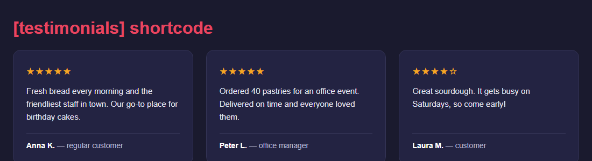

← Обратно към началото
Всички проекти
Всичко, което съм разработил — от реални инструменти в production, до демота, показващи как бих подходил към конкретен проблем.
PaletPlaner
Подреждането на нестандартни детайли от ламарина върху палети за транспорт се решаваше на око — често с пропиляно място. PaletPlaner чете реалната форма на детайлите от качени DXF файлове и автоматично изчислява оптимално подреждане в няколко палета, спазвайки реални лимити за тегло и височина на стифиране. Проектирано и разработено изцяло самостоятелно, в реална ежедневна употреба — вече се разширява като абонаментен инструмент за други цехове.

Машинно време — CNC калкулатор
Оценката на машинно време от технически чертеж обикновено отнема експертно пресмятане "на око" — лесно за грешка при детайли с комбинация от пробиване, фрезоване и резба. Инструментът чете PDF чертеж чрез AI — разпознава дупки, резби, контури и допуски — и прехвърля данните директно в калкулатор, който смята реално машинно време по инструментите, материалите и машините на конкретния цех, не по генерични стойности. Пълен двуезичен интерфейс (български/английски).

Каменна стряха — демо сайт за къща за гости
Малките семейни къщи за гости често нямат собствен сайт и разчитат само на обява в Booking.com — без разказ за мястото, стаите и кухнята, който да убеди посетителя да резервира направо. Демо сайт за къща за гости в Родопите (построена 1912 г., три стаи, родопска кухня) — с представяне на стаите, избор на дати за запитване за резервация и локация. Изграден, за да покаже как изглежда професионално онлайн присъствие за малък семеен бизнес в туризма.
WooCommerce плъгин за отстъпки
Ръчното създаване и подновяване на промо кодове за отстъпки лесно се пропуска или сгрешава. Този плъгин премахва тази стъпка напълно — щом сумата в кошницата премине зададен праг, автоматично се прилага 10% отстъпка като такса в кошницата, без нужда от промо код. Изграден с реалния WooCommerce hook (woocommerce_cart_calculate_fees) и тестван на реален WooCommerce магазин.

WordPress плъгин за препоръки
Клиентски препоръки, пръснати по имейли, скрийншоти и общ плъгин за контактна форма, трудно се организират и още по-трудно се показват еднакво. Този плъгин дава на препоръките собствен структуриран тип съдържание — име на автор, роля и рейтинг в звезди — визуализиран чрез прост shortcode в отзивчива решетка, плюс REST endpoint за изтегляне на същите данни в headless фронтенд.

Laravel система за резервации
Демо на Laravel система за резервации и плащания: клиентите избират услуга и свободен час, плащат през Stripe Checkout, а webhook потвърждава резервацията след успешно плащане. Двойно записване е предотвратено с реална SQL проверка за застъпване, а служебен админ панел показва и управлява всички резервации.
Laravel клиентски портал
Laravel портал за подаване и преглед на документи: клиентите подават проект с придружаващи файлове, служителите го преглеждат и преместват през работен процес по статус, а готовите файлове се връщат през същия портал. Файловете се съхраняват на частен диск — всяко изтегляне минава през проверка за права, никога през отгатваем URL адрес.